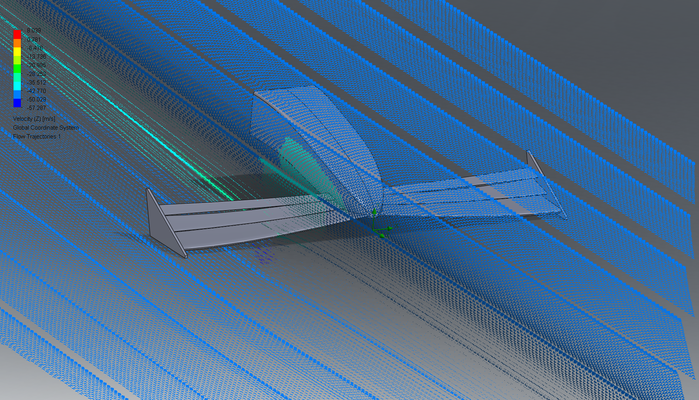

Owned a classified defense hardware enclosure from concept to fielded systems — independently leading CAD, CFD/FEA analysis, and production drawings for a multilayer protective enclosure balancing thermal, structural, and sealing requirements. Now planned for integration across multiple fielded defense systems.

Self-initiated a deep dive into SolidWorks Premium's Flow Simulation tool, designing a multi-element F1-style front wing from scratch with no class or team behind it. Ran an external flow analysis at 100 mph and measured 347.5 N (≈78 lbf) of downforce by integrating pressure loads across the wing.

Built and flew UAVs hands-on, not just designed them: as a Northfield High School (Denver, CO) student, worked in tandem with Lockheed Martin engineers to build a LIDAR-mapping hexacopter, running onboard Raspberry Pi/LIDAR mapping software myself. Then cut, wired, and flight-tested a scratch-built foamboard fixed-wing aircraft through several prototypes until it flew clean.
Designed, built, and demoed a wearable sleep-stage-detection device in a single 24-hour hackathon, using heart rate and skin temperature sensing to wake the user at the end of a REM cycle. Built with teammates Sani Mohottige and Liam Alcalay.
Ongoing personal robotics, mechatronics, and UAV-component projects in the Maker Club lab — motor integration, custom gearboxes, and rapid-prototyped enclosures using CNC, electronics, and 3D printing.
Designed and built the motor-driven vibration linkage for a filtration tray that separates spotted lanternfly contamination from grape juice during harvest, sourcing components from McMaster-Carr. Built with Flynn Basehart, Kathryn Moskal, Emma Harshberger, and Gavin Sneyd.